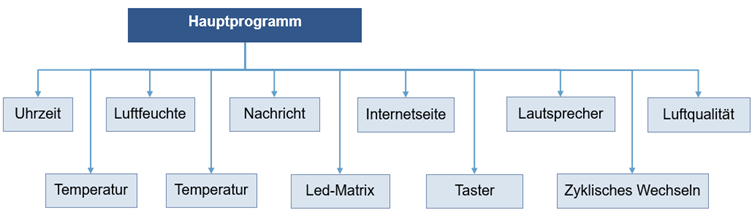

Programmierung
Vorab muss erwähnt werden, dass die Programmierung so einfach wie möglich gehalten
wurde, wodurch auf gewisse Konventionen bewusst verzichtet wurde.
Betrachtet man einen beliebigen Programmcode, dann besteht dieser aus mehreren Elementen
bzw. Abschnitten.
Die wesentlichen Abschnitte sind die folgenden:
// Beschreibung von Ihrem Programm
#include <…> // Eintragung der benötigten Bibliotheken
#define A 5 // Eigene Definitionen
void Setup() // Dieser Programmteil wird einmal, beim Start, ausgeführt
{
Ihre Anweisungen; // Anweisungen die nur einmalig ausgeführt werden müssen
}
void Loop() // Dieser Programmteil wird immer wieder ausgeführt
{
Ihre Anweisungen; // Anweisungen die wiederholt ausgeführt werden müssen
}
Man kann sich leicht vorstellen, dass in der void Loop beliebig viele komplexe Funktionen aufgerufen werden können. Hierdurch kann ein Programmcode übersichtlich, sowie leicht zu verstehen, programmiert werden.
Insgesamt gibt es sechs Funktionen: Uhrzeit, Temperatur, Luftfeuchte, Timer, eigene Nachricht, zyklischer Wechsel und Internetseite. Dabei darf man nicht das Hauptprogramm, das vorhin vorgestellt wurde, vergessen. Somit würde man daraus schließen, dass es sieben Funktionen und das Hauptprogramm gibt. Leider stimmt dies nicht ganz, da es noch die Module, Taster, Led-Matrix und Lautsprecher gibt. Diese Ein - und Ausgabe von Signalen muss natürlich auch gehandhabt werden. Aus diesem Grund kommen demnach noch drei zusätzliche Funktionen hinzu.
Unter dem Strich bedeutet dies, dass es 11 Funktionen und ein Hauptprogramm gibt. Schematisch dargestellt, sieht dies so aus:
Weitergehend mit Interrupts, welche dafür da sind, einen bestimmten Programmcode in Abhängigkeit von einem Ereignis abzuarbeiten. In unserem Fall haben wir Interrupts dafür verwendet, um die Sekunden zu zählen. Dies bedeutet, dass wir durch das Zählen der Sekunden, in der Lage sind, eine Uhr zu programmieren. Zusätzlich wurde, das Zählen der Sekunden für das zyklische Wechseln der Modi genutzt.
Leider lernt man das Programmieren, weder über Nacht noch über eine Eingebung. Programmieren ist ein logischer Prozess, bei dem Zeile für Zeile programmiert und vom Mikrocontroller abgearbeitet wird. In unserem Fall wurde der Mikrocontroller in der Programmiersprache C programmiert.
Als Beispiel soll die Uhrzeit bzw. deren Programmcode vorgestellt werden. Für diese benötigt man im Wesentlichen drei Variablen:
- Sekunden
- Minuten
- Stunden
Für diese Funktion wird im Wesentlichen die If-Else-Verzweigung genutzt. Diese Verzweigung überprüft, ob eine Bedingung erfüllt ist und führt bei erfüllter Bedingung einen Programmcode aus. Zu erwähnen ist, dass die Funktion, Internetseite, eine Variable auf „1“ setzt, wenn der Nutzer die Uhrzeit stellen möchte. Dadurch werden die folgenden Variablen benötigt:
- Sekunden_stellen
- Minuten_stellen
- Stunden_stellen
Diese Variablen sind dafür dar, damit die Uhrzeit neu gesetzt werden kann. Zusätzlich kann man sich vorstellen, dass es unterschiedliche Variablen gibt. Die verwendeten Variablen sind vom Typ "Integer", abgekürzt int. Variablen vom Typ int sind ganze Zahlen.
Wir stellen uns vor, dass wir eine Variable "test" hätten. Als Beispiel wollen wir abfragen, ob die Variable test größer als die Zahl 10 ist. Wenn dieser Fall eintritt, dann wird die Variable test um 1 erhöht.
If ( test < 10 ) // Bedingung ob test
{
test = test + 1; // Das ist eine Anweisung
}
Anmerkung: Anweisungen müssen mit einem > ; <, Semikolon abgeschlossen werden.